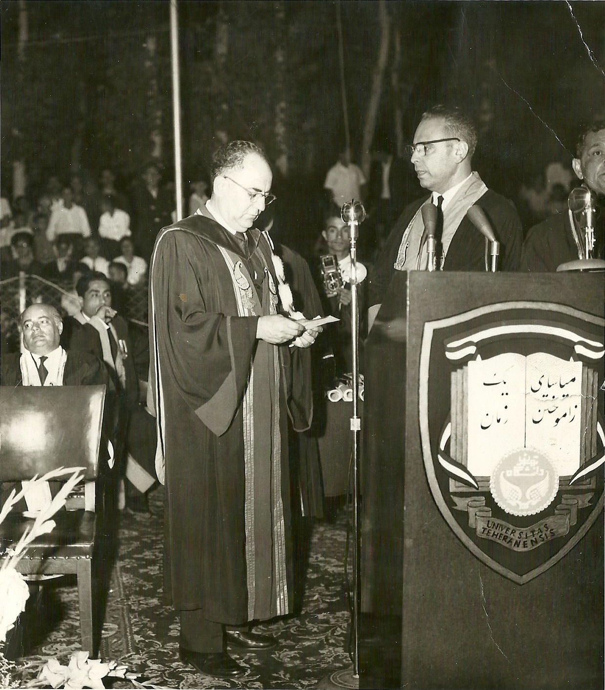
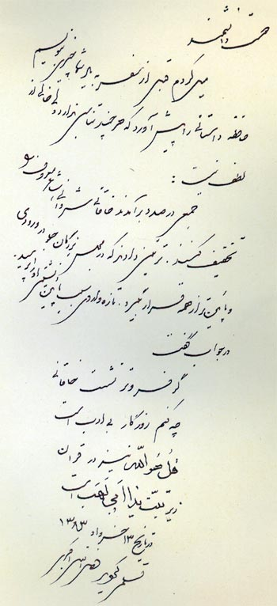
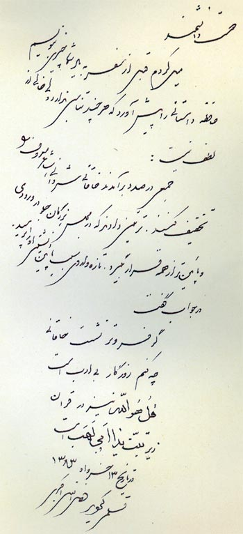
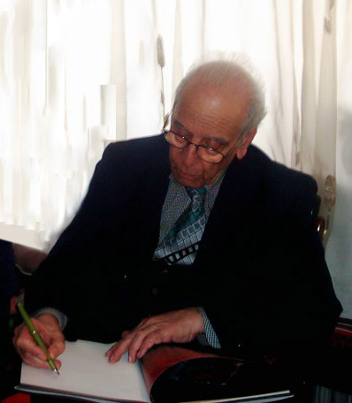

Dr. Fazlollah Akbari
(April 1921 - April 2005)
Dr. Fazlollah Akbari (22/04/1921 - 2/04/2005), scholar and promoters of Accounting, was the former director of Tehran University's Department of Administrative Sciences and Business Management and the first professor of Accounting in Iran.
Biography
Fazlollah Akbari was born on the 22nd of April 1921 in Golpayegan. After finishing elementary school in Golpayegan, Iran, he moved to Isfahan for high school. At the same time, he started to learn science from Haaj Fakhorolama, his grandfather, and Fazlollah Homaei and Jalal Homaei. He learnt Mathematics and Accounting from his father and his grandfather. After receiving his diploma, he continued his education in Law at Tehran University, and after graduation he began to work at Iranian National Oil Company (NOC) and, in the mean time, he collaborated with Haaim to prepare an English to Persian dictionary. In early 1951, he came back to Tehran University’s Law School to pursue his master’s degree in Business and Administrative Science. After receiving scholarships, he pursued his studies at the University of Southern California (USC) and Stanford University and received his PHD in Business Administration with major of Accounting. He was one of Gerald Meier's first outstanding students. After obtaining his PhD, he came back to Iran and began teaching in the school of business administration and in 1958 he joined Tehran University’s Law School as an associate professor.
Dr. Akbari about this period of his life in an interview with the Iranian Journal of Accounting wrote:
“... I always think human can progress in the way, which it is destined. Finally I was able to benefit from scholarships in the this field. So at that time I literally entered the realm of accounting ... After returning from abroad, Tehran University announced that they have an open position for lecturing Accounting and Auditing courses and I was a volunteer for the job. "
“I was the only candidate. ... I have to say at that time I knew two accountants, that had more experience than me. Despite their interests, they were rejected since doctoral degree was one of requirments for employment.”
“For years, Accounting was not accepted as a discipline for teaching at the university. Until 1954, there was no institution or university for teaching Accounting. ... Unfortunately, in that time, due to lack of sufficient information on the content of Accounting, most people were not considering Finance and Accounting as a field of science in the university. For years, the content of Accounting, and it’s impact on the country’s progress remained unknown. ... In 1955, I became a volunteer for teaching Accounting at the university, while one of the university's faculty said: "I suspect accounting is appropriate for teaching at university. In the past accounting was taught in the sixth year of high school, and if we consider Accounting as a university program, soon there will be many volunteers to teach housekeeping, livestock and horticulture, teaching Calculus is sufficient for teaching in the university" ... ”
“It took about three years to persuade them and illustrate different tracks in the field of Accounting and it’s importance and it’s difference with Arithmetic and Mathematics. Finally, after continuous and repeated visiting president of university, it was decided at the Tehran University’s Faculty of Law and Political Sciences to recruit an Associate Professor. ”
“During 1963, my explanations makes the president of Tehran University convinced and determined that like many well known universities in the world and based on the needs of the country, there must be a school for teaching and conducting research in Managements. ”
"In September of 1964, in a meeting with Dr. Saleh, President of University of Tehran, in spite of many opposition, establishment of the department of Administrative Sciences and Business Management approved by the Council votes. Opposition to the establishment of the department, which was the first of its kind in the country, mostly was due to not considering Managements as a field of knowledge. “(Dr. Akbari, 1999, It is not my turn, p. 15)

After the establishment, Dr. Akbar selected as the president of The Faculty of Administrative Sciences and Business Management for 8 years. Subsequently, he became the Vice Minister of Higher Education in Iran. He was appointed a professor of accounting at the same time in different universities and institutions of higher education, especially the National Bank of Iran. After 1979 he was retired from school and continued his collaboration with the Research Centre for Accounting and Auditing, which results in many books and articles.
In 1987 he left Iran and returned to the Stanford University's School of Business for about two years to do research, writing and lecturing graduate courses. After that, he moved to England for a year to teach at School of Public Administration. He returned to Iran in the mid 1990’s to continue cooperation with the Research Centre for Accounting and Auditing. He spent 20 years as the leader of a group of academicians, creating the first Farsi Accounting/Management terminology dictionary. In 2002 his book, titled “Analytical Study or Analysis of the Audited Financial Statements”, was chosen by the Ministry of Culture as one of the best books of the year and praised.
Doctor Akbari was impartial and realistic. While respecting everyone, he had a firm, reasonable and kind behaviour with others. He was firm and decisive ,and at the same time he was moderate. He was known as humble and always avoiding criticize and disapproval of others and respectful to other’s rights. Role’s of Dr. Akbari in the development of knowledge of accounting is crucially important. This role was the product of his feel of ‘enthusiasm’ and ‘responsibility’ to the development of society and “faith” to resourcefulness of science. He was enthusiastic about Persian poetry and he used to write them in his wounderful handwritten and give them to the people as a gift. On the 2nd of April 2005, Dr. Akbari passed on and remains 2 girls and 2 boys.
 

In 21st of April 2012, a gathering "Celebrating the legacy of accounting in Iran” was held to commemorate Dr. Akbari and was formed by the pioneers in this field and the Accounting profession, academics, certified public accountants and Accounting students. In this event, Nezameddin Molkarae, board member of CPAs (Iranian Association of Certified Public Accountants), about Doctor Akbari said: “He was one of the pioneers of the Accounting profession and although he is not between us anymore, it is impossible to belive that, lovers don’t die and he was from lover’s generation. He did valuable services for our culture and society.” Peace be upon him .

Educations :
- PhD in Business Administration with Major of Accounting , University of Southern California, United States of America
- MSc in Business and Administrative Science, Tehran University, Iran
- BA in Law, Tehran University, Iran
Books :
- Accounting Technology , Tehran University, and reprinted many times by other publishers, 2002
- Accounting principles, Tehran University, with frequent reprinting, 1961
- Analysis of Financial Statements, the audit, with five times reprinted and revised, 1987
- Commercial Accounting , Department of Administrative Sciences and Business Administration, 1975
- Commercial and industrial funding, 1986
- Depreciation accounting, auditing organizations, first published in 1992, Seventh Edition, 2001
- Accounting Terminology Dictionary (English-Farsi), Volume I, 1997
- Analytical Study or Analysis of the Audited Financial Statements, 2000
Articles :
- Story of a professor or history of a science (magazine interview - 1993)
- Analysis of Financial Statements (summer 1995)
- Fateful words (Winter 1998)
- It is not my turn (Journal, Spring 1999)
- Remember of a friend(CPA Journal, No. 132, Sep 1999)
- How to teach accounting at the University for the first time (quarterly Audit 4 and 5, Fall and Winter 1999)
- We didn’t learn learnt lessons (quarterly audit 9, Winter 2000)
- Mostafa Ali-Madad critical thinkers, prolific and productive (quarterly audit, No. 16, October-November 2002)
- I haven’t gone (quarterly audit, No. 23, 2004)
- Selected articles of Auditor Journal (Auditor Journal No. 23, 2004)
References :